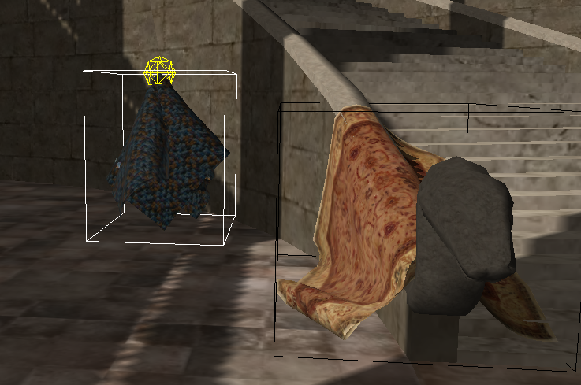

In a similar way to rigid bodies (see rigid body sleeping), cloths can go to sleep after a period of inactivity. The objective of sleeping is to improve performance by not simulating cloths which are not moving.
Inactivity is defined as all of the cloth vertices being below a linear velocity threshold. When all vertices in a cloth are determined to be inactive a counter is decremented until it reaches zero at which point the cloth transitions into a sleeping state and all particle velocities are zeroed.
The sleep state for cloth can be visualized using the NX_VISUALIZE_CLOTH_SLEEP SDK parameter. A white bounding box is drawn around cloths which are awake and a black one for sleeping cloths.
The most important parameter for the user to be concerned with is the velocity threshold used for sleep determination. This is set and retrieved using the NxCloth members:
NxReal NxCloth::getSleepLinearVelocity() const;
void NxCloth::setSleepLinearVelocity(NxReal threshold);
The threshold should be set high enough so that the cloth actually goes to sleep when it is not being interacted with, but low enough that the cloth does not remain awake due to oscillations and insignificant interactions with the cloth.
The user can query if a cloth is asleep using:
bool NxCloth::isSleeping() const;
Sometimes it will be necessary to put cloths to sleep, for example during level loading a user may wish to force all the cloths in the level to sleep, so as to prevent extremely high cpu/ppu load during the start of the level while the cloth settles and drops to sleep. When putting a cloth to sleep the SDK zeros the velocity of the cloth particles, so that when the cloth wakes up it is not instantly moving again.
void NxCloth::putToSleep();
Inversely there are occasions when the user wishes to wake up a cloth. For example when a user enters the vicinity of a cloth which has been forced to sleep.
void NxCloth::wakeUp(NxReal wakeCounterValue = NX_SLEEP_INTERVAL);
As well as simply waking up the cloth, wakeUp() can be used to set the amount of simulation time until the cloth next goes to sleep. Setting a very high value can be used to force the cloth to always stay awake. Useful for performance testing or tuning of the cloth behavior.